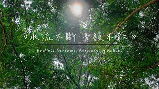
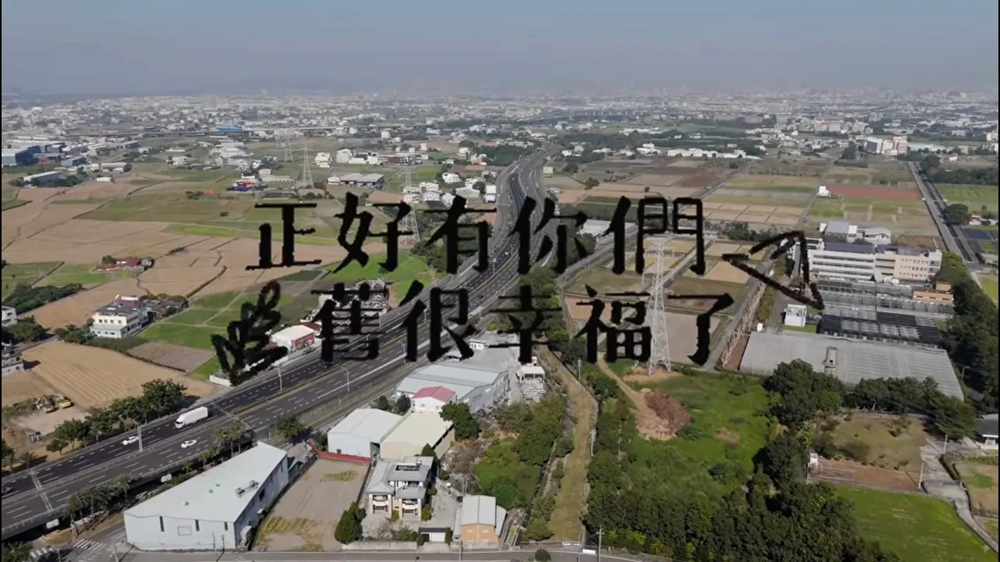

從人文關懷到商業實戰的影像敘事
展現影像敘事張力，深刻描繪不屈不撓的精神，獲得 LEXUS MY FILM 全國 30 強肯定。

透過紀實影像，捕捉在地文化的脈動，展現對於社會議題的深度關懷與觀察力。

透過社區參與，關懷在地文化
展現從腳本企劃、拍攝執行到後製剪輯的獨立製作能力，並透過流量數據優化內容效益。
傳播的本質是溝通，而我已準備好在這個更寬廣的學術舞台上， 傾聽社會的聲音，述說更多動人的故事。 期待能加入貴系，為未來的傳播領域注入一股嶄新的活力。